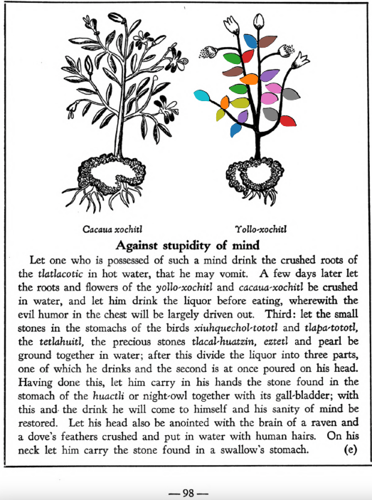

Yollo-xochitl
Morphemes:
- Xochitl/flower
Subchapter 8c
The bladder-wort. When the flow of the urine is shut off, to open it take the roots of the plants mamaxtla and cohuanene-pilli, the tlatlauhqui amoxtli, the very white flower yollo-xochitl, and the tail of a sucking puppy; grind these up in acrid tasting water, macerate the well-known chian seed therein, and administer it. The abdomen is also to be washed out with the root of the herb ohua-xocoyolin crushed in hot water, and the juice given through a clyster. If this medicine avails nothing it will be necessary to take the pith of an extremely slender palm, covered with thin cotton and smeared with honey and the crushed root of the herb huihuitz-mallotic, and this cautiously inserted into the virile member. If this is done the stopped urine will be freed.
https://archive.org/details/aztec-herbal-of-1552/page/59
La hierba de vejiga. Cuando el flujo de la orina se detiene, para abrirlo se toman las raíces de las plantas mamaxtla y cohuanene-pilli, el tlatlauhqui amoxtli, la flor muy blanca yollo-xochitl, y la cola de un perrito lactante; se muelen en agua de sabor acre, se macera allí la semilla conocida chian y se administra. También debe lavarse el abdomen con la raíz de la hierba ohua-xocoyolin triturada en agua caliente, y el jugo debe administrarse como enema. Si este remedio no funciona, será necesario tomar la médula de una palma extremadamente delgada, cubierta con algodón fino y untada con miel y la raíz molida de la hierba huihuitz-mallotic, e introducirla cuidadosamente en el miembro viril. Si se hace esto, se liberará la orina retenida.
Subchapter 8d
Difficulty in passing the urine. Against difficulty in urination, a liquor prepared from the flowers tetzmi-xochitl, tlaco-izqui-xochitl, yollo-xochitl, the mamaxtla root, red earth and eztetl, white earth, drunk in water, will be of avail. Also place on the stomach a stone found in the stream, in which pearls (uniones) appear.
https://archive.org/details/aztec-herbal-of-1552/page/60
Dificultad para orinar. Contra la dificultad para orinar, sirve un licor preparado con las flores tetzmi-xochitl, tlaco-izqui-xochitl, yollo-xochitl, la raíz de mamaxtla, tierra roja y eztetl, tierra blanca, bebido en agua. También se debe colocar en el abdomen una piedra de arroyo en la que aparecen perlas (uniones).
Subchapter 10e
Against stupidity of mind. Let one who is possessed of such a mind drink the crushed roots of the tlatlacotic in hot water, that he may vomit. A few days later let the roots and flowers of the yollo-xochitl and cacaua-xochitl be crushed in water, and let him drink the liquor before eating, wherewith the evil humor in the chest will be largely driven out. Third: let the small stones in the stomachs of the birds xiuhquechol-tototl and tlapa-tototl, the tetlahuitl, the precious stones tlacal-huatzin, eztetl and pearl be ground together in water; after this divide the liquor into three parts, one of which he drinks and the second is at once poured on his head. Having done this, let him carry in his hands the stone found in the stomach of the huactli or night-owl together with its gall-bladder; with this and the drink he will come to himself and his sanity of mind be restored. Let his head also be anointed with the brain of a raven and a dove’s feathers crushed and put in water with human hairs. On his neck let him carry the stone found in a swallow’s stomach.
https://archive.org/details/aztec-herbal-of-1552/page/98
Contra la torpeza de entendimiento. Quien tenga esta condición debe beber las raíces machacadas del tlatlacotic en agua caliente, para que vomite. Unos días después, que se trituren las raíces y flores del yollo-xochitl y cacaua-xochitl en agua, y que beba el licor antes de comer, con lo cual se expulsará en gran parte el humor maligno del pecho. En tercer lugar: que se muelan en agua las piedrecillas del estómago de las aves xiuhquechol-tototl y tlapa-tototl, el tetlahuitl, las piedras preciosas tlacal-huatzin, eztetl y perla; después de esto se divide el licor en tres partes: una se bebe, la segunda se vierte de inmediato sobre su cabeza. Habiendo hecho esto, debe llevar en las manos la piedra hallada en el estómago del huactli o tecolote junto con su vesícula biliar; con esto y la bebida recobrará el juicio y se restaurará su cordura. También debe untarse la cabeza con el cerebro de un cuervo y plumas de paloma molidas y puestas en agua con cabellos humanos. En su cuello debe llevar la piedra hallada en el estómago de una golondrina.
Subchapter 10k
The traveler’s protection. The dried flowers meca-xochitl, tlil-xochitl, huey-nacaztli, the bark of the trees copal-xocotl and atoya-xocotl, the leaves of the a-xocotl tree, white incense, the salve xochi-ocotzotl and yollo-xochitl, thus crushed and pulverized; then crushed placed within the cavity of the well-known and most fragrant huacal-xochitl flower, that they may receive the very redolent odor of this flower, and breathe it out. Then take at the end the highly praised flower yollo-xochitl, which you must nicely hollow out and therein cover up the health bearing fine powder, suspending the capsule from the neck.
https://archive.org/details/aztec-herbal-of-1552/page/104
Protección del viajero. Las flores secas meca-xochitl, tlil-xochitl, huey-nacaztli, la corteza de los árboles copal-xocotl y atoya-xocotl, las hojas del árbol a-xocotl, incienso blanco, el ungüento xochi-ocotzotl y yollo-xochitl, todo esto triturado y pulverizado; luego se coloca dentro de la cavidad de la muy conocida y fragante flor huacal-xochitl, para que absorban su olor intensamente perfumado y lo exhalen. Después se toma, al final, la muy apreciada flor yollo-xochitl, que se debe ahuecar con cuidado y allí se encierra el fino polvo saludable, suspendiendo la cápsula del cuello.

Leaf traces by: Zoë Migicovsky, Acadia University, Canada